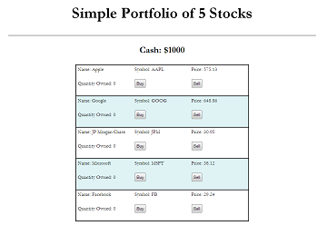

-
 R/aww Sliding Puzzle Game
R/aww Sliding Puzzle GameThis was my first project using an API (Imgur). Since the API couldn't return an entire gallery, I also used YQL to scrape a gallery's hrefs and randomly pick one for the API call. The sliding puzzle uses HTML5 canvas and accepts rectangular images. Tiles are randomly shuffled and checked to ensure the puzzle is solvable.
-
 Hot or Cold Game
Hot or Cold GameThis was one of my earlier projects where the emphasis was game design. Guessing a number between 1-100 can be frustrating, so I iterated and did repeated user tests to find the right balance between helping the user and making the game difficult enough to still be engaging. Try it and tell me what you think!
-
 Shopping List App
Shopping List AppThis project forced me to rely heavily on user testing (I rarely use lists to remember things). My expectations for each element interaction were quite different from my users'; little things like having the text remain unedited on an item after clicking out matter a lot! I also learned that jQuery effects don't always cleanly map to mobile.
-

Simplified Trading Simulation
This was a javascript exercise I received after an interview; it was actually kind of fun to build and I might make a full-featured minigame out of it later. I learned a cool one-liner to do pos/neg randomness in js:
Math.random() < 0.5 ? -1 : 1 -
 EDICT2 Parser
EDICT2 ParserThis was an earlier rails project I did as an exercise in parsing and searching foreign language dictionaries. Most of my time was spent figuring out a good schema and doing query optimization (new relic was very helpful). This demo app only has 15k entries since that is the limit on Heroku free tier; sorry if your search turns up blank!
-
 Mobile Layout
Mobile LayoutThis was a side project I did for a friend of a friend who runs an image gallery. They needed a mobile layout for the main page and we opted for scaling pictures with a fixed 3x3 grid. I learned about media queries and the difficulties involved in making responsive designs. I also finally tried out bitbucket since their repo was there.